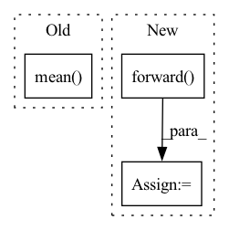

Pattern ID :26092

Before Change
value_loss_buffer = []
for _ in range(self.value_update_iter):
value = self.value_net.forward(obs)
value_loss = (ret - value).pow(2).mean()
value_loss_buffer.append(value_loss.item())
self.value_optimizer.zero_grad()
value_loss.backward()
self.value_optimizer.step()
After Change
value_loss_buffer = []
policy_loss_buffer = []
for _ in range(self.value_update_iter):
td_target = rew + self.gamma * self.value_net.forward(next_obs) * (1 - don)
delta = td_target - self.value_net.forward(obs)
delta = delta.detach().numpy()
advantage_lst = []
advantage = 0.0
for delta_t in delta[::-1]:
advantage = self.gamma * self.lam * advantage + delta_t[0]
advantage_lst.append([advantage])
advantage_lst.reverse()
advantage = torch.FloatTensor(advantage_lst)
value = self.value_net.forward(obs)
//value_loss = (ret - value).pow(2).mean()
value_loss = F.smooth_l1_loss(td_target.detach(), value)
value_loss_buffer.append(value_loss.item())
self.value_optimizer.zero_grad()
value_loss.backward()
self.value_optimizer.step()
if self.log:
self.writer.add_scalar("value_loss", np.mean(value_loss_buffer), self.train_count)
probs = self.policy_net.forward(obs)
probs = probs.gather(1, act).squeeze(1)
ratio = probs / old_probs
surr1 = ratio * advantage
surr2 = torch.clamp(ratio, 1. - self.epsilon, 1. + self.epsilon) * advantage
policy_loss = - torch.min(surr1, surr2).mean()
policy_loss_buffer.append(policy_loss.item())
In pattern: SUPERPATTERN
Frequency: 3
Non-data size: 3
Instances
Fragment ID: 78684594
Project Name: deligentfool/policy_based_rl
Commit Name: 3ee3f4f7f6374ecc0a4efef5d67cc2399eab43a4
Time: 2020-05-30
Author: 1027660817@qq.com
File Name: PPO_CLIP/ppo_cartpole.py
M Class Name: ppo_clip
N Class Name: ppo_clip
M Method Name: train(1)
N Method Name: train(1)
M Parent Class: object
N Parent Class: object
M File Name: PPO_CLIP/ppo_cartpole.py
N File Name: PPO_CLIP/ppo_cartpole.py
M Start Line: 121
M End Line: 159
N Start Line: 106
N End Line: 156
'>
Before Change
attention_cache_handle = int(cache_metadata[0, 0].item())
current_sequence_length = int(cache_metadata[0, 1].item())
with self.memory_cache.use_cache(attention_cache_handle) as cache:
print("METADATA:", cache_metadata, "CACHE", cache.mean(), "CACHE ENTRIES:", len(self.memory_cache._allocated_tensors))
cache[...] += 1
return (inputs[0] + cache.flatten()[0],)
After Change
assert isinstance(self.module, BloomBlock) and cache.shape[0] == 2 and cache.ndim == 5
layer_past = past_k, past_v = cache[0, :, :prefix_length], cache[1, :, :prefix_length]
print(past_k.shape, past_v.shape)
hidden_states, (new_k, new_v) = self.module.forward(hidden_states, layer_past=layer_past, use_cache=True)
// todo remove these debugprints
new_length = new_v.shape[1]
'>
Fragment ID: 78684598
Project Name: bigscience-workshop/distributed-bloom
Commit Name: 33358bc52b91b452f26e87a653aae8fec88787ab
Time: 2022-06-19
Author: justheuristic@gmail.com
File Name: src/server/backend.py
M Class Name: TransformerBackend
N Class Name: TransformerBackend
M Method Name: inference_step(2)
N Method Name: inference_step(2)
M Parent Class: ModuleBackend
N Parent Class: ModuleBackend
M File Name: src/server/backend.py
N File Name: src/server/backend.py
M Start Line: 32
M End Line: 37
N Start Line: 30
N End Line: 54
'>
Before Change
value_loss_buffer = []
for _ in range(self.value_update_iter):
value = self.value_net.forward(obs)
value_loss = (ret - value).pow(2).mean()
value_loss_buffer.append(value_loss.item())
self.value_optimizer.zero_grad()
value_loss.backward()
After Change
value_loss_buffer = []
for _ in range(self.value_update_iter):
value = self.value_net.forward(obs)
td_target = rew + self.gamma * self.value_net.forward(next_obs) * (1 - don)
value_loss = F.smooth_l1_loss(td_target.detach(), value)
value_loss_buffer.append(value_loss.item())
self.value_optimizer.zero_grad()
value_loss.backward()
'>
Fragment ID: 78684587
Project Name: deligentfool/policy_based_rl
Commit Name: 3ee3f4f7f6374ecc0a4efef5d67cc2399eab43a4
Time: 2020-05-30
Author: 1027660817@qq.com
File Name: ICM_PPO/icm.py
M Class Name: icm_ppo
N Class Name: icm_ppo
M Method Name: train(1)
N Method Name: train(1)
M Parent Class: object
N Parent Class: object
M File Name: ICM_PPO/icm.py
N File Name: ICM_PPO/icm.py
M Start Line: 206
M End Line: 215
N Start Line: 205
N End Line: 219